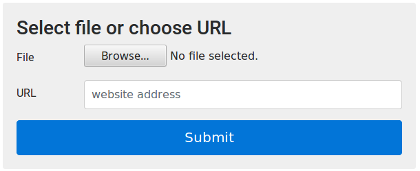
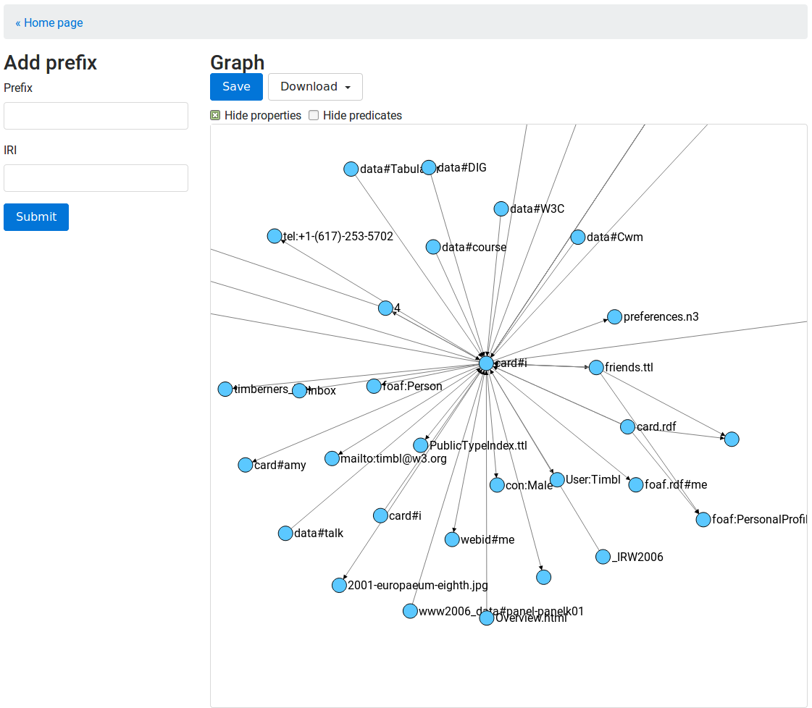

In order to make RDF data more accessible to users, we have developed the visual tool VisGraph^3. It allows you to read, create, and modify RDF graphs. In this demo, we present a web-based prototype that support Read-Write aspect of the Web. In contrast to related work, RDF triples can be created and shared entirely with visual elements.
RDF is not only the backbone of the Semantic Web and Linked Data, but it is increasingly used in many areas e.g. social web, government, publications, life sciences, user-generated content, media. As a consequence, more and more people come into contact with knowledge representation and become an RDF provider as well as RDF consumer. The purpose of data visualization is to propose intuitive ways for information perception and manipulation, especially for those who are not an expert. RDF visualizations can help in this regard by assisting in the exploration and creation of RDF data.
In order to provide a more intuitive and user-oriented RDF visualization, we developed the VisGraph^3. In this demo, we present a web-based prototype for read and write RDF. The paper is constructed according to sections. In Section , we present implementation and overview of our tool. Section is devoted to brief related work. The paper ends with conclusions and future work.
VisGraph^3 is implemented on top of several open source tools and libraries. To build a basic user interface we used Bootstrap v4.0.0-alpha.6 widgets. Our tool is designed with RWD principles so we can view it in various device and displays. In VisGraph^3, interaction with the user provides JavaScript and jQuery . The RDF graph visualization is based on D3 , which is a JavaScript library for making dynamic, interactive data visualizations in web browsers. The back-end is implemented in PHP and MySQL. The source code is available on https://github.com/visgraph3/demo. Our tool is released under the MIT license.
VisGraph^3 is a web-based application for read and write RDF. The user interface consists of two parts:
In the upload page users can specify an RDF file in two different ways: by entering a URL or by upload to the server. This part is presented in . Here we show the last ten projects. VisGraph^3 can load RDF files in Notation3, Turtle, N-Triples and RDF/XML syntaxes.

The second page is the viewer page, which is the main part of our web application. This part is divided into two areas: the control area and the graph area. In the control area users can add prefixes and IRIs that makes it easy to enter long IRIs. Here we can filter predicates, which are available in the loaded file. An RDF graph is seen in the graph area. We visualize an RDF graph as a node and directed-arc diagram, in which each triple is represented as a node-arc-node edge This part is presented in . The indication on the node displays a pop-up window, where we can add a subject, a predicate or an object. After editing user can download an RDF graph in Turtle or RDF/XML syntax. It is also possible to save and share an RDF graph in the server. All share projects have its own URL.

The prototype of our tool is available at http://visgraph3.org. A video demonstration is available at http://visgraph3.org/demo/.
In this paper we have presented VisGraph^3, a web tool for RDF visualization and creation. The tool does not require prior knowledge of RDF syntaxes. Some future extensions of our tool include support of new serializations, especially syntaxes that handling named graphs, and deal with the large amount of RDF data. We would like to add more options for filtering, e.g. selection of a node and its neighbors. The desired function is also authentication to the user profile, where the individual projects are stored. In can be done with Solid is a set of conventions for building decentralized social applications.
Cyganiak, Richard, David Wood, Markus Lanthaler: RDF 1.1 Concepts and Abstract Syntax (2014) https://www.w3.org/TR/2014/REC-rdf11-concepts-20140225/.
Noy, Natalya F., Michael Sintek, Stefan Decker, Monica Crubezy, Ray W. Fergerson, Mark A. Musen: Creating semantic web contents with protege-2000. IEEE intelligent systems 16.2 (2001): 60-71.
Pietriga, Emmanuel: Isaviz: a visual environment for browsing and authoring rdf models. Eleventh International World Wide Web Conference Developers Day. 2002.
Huynh, David, David Karger, and Dennis Quan: Haystack: A platform for creating, organizing and visualizing information using RDF. Proceedings of the 3rd International Conference on Semantic Web-Volume 55. CEUR-WS.org, 2002.
Liebig, Thorsten, and Olaf Noppens: OntoTrack: A semantic approach for ontology authoring. Web Semantics: Science, Services and Agents on the World Wide Web 3.2 (2005): 116-131.
Berners-Lee, Tim and Yuhsin Chen, Connolly Lydia, Dhanaraj Dan, Hollenbach Ruth, Lerer James, Sheets Adam: Tabulator: Exploring and analyzing linked data on the semantic web. Proceedings of the 3rd international semantic web user interaction workshop. Vol. 2006. 2006.
Singh, Gagandeep, T. Prabhakar, Jayanta Chatterjee, V. Patil, S. Ninomiya, and others: OntoViz: visualizing ontologies and thesauri using layout algorithms. AFITA: The fifth international conference of the Asian Federation for Information Technology in Agriculture, JN Tata Auditorium, Indian. 2006.
Atemezing, Ghislain Auguste, Raphaël Troncy: Towards a linked-data based visualization wizard. Proceedings of the 5th International Conference on Consuming Linked Data-Volume 1264. CEUR-WS.org, 2014.
Bikakis, Nikos, Melina Skourla, George Papastefanatos: rdf:SynopsViz–a framework for hierarchical linked data visual exploration and analysis. European Semantic Web Conference. Springer, Cham, 2014.
Skjæveland, Martin G.: Sgvizler: A Javascript wrapper for easy visualization of SPARQL result sets. Extended Semantic Web Conference. Springer, Berlin, Heidelberg, 2012.
Lohmann, Steffen and Stefan Negru, Florian Haag, Thomas Ertl: Visualizing ontologies with VOWL. Semantic Web 7.4 (2016): 399-419.